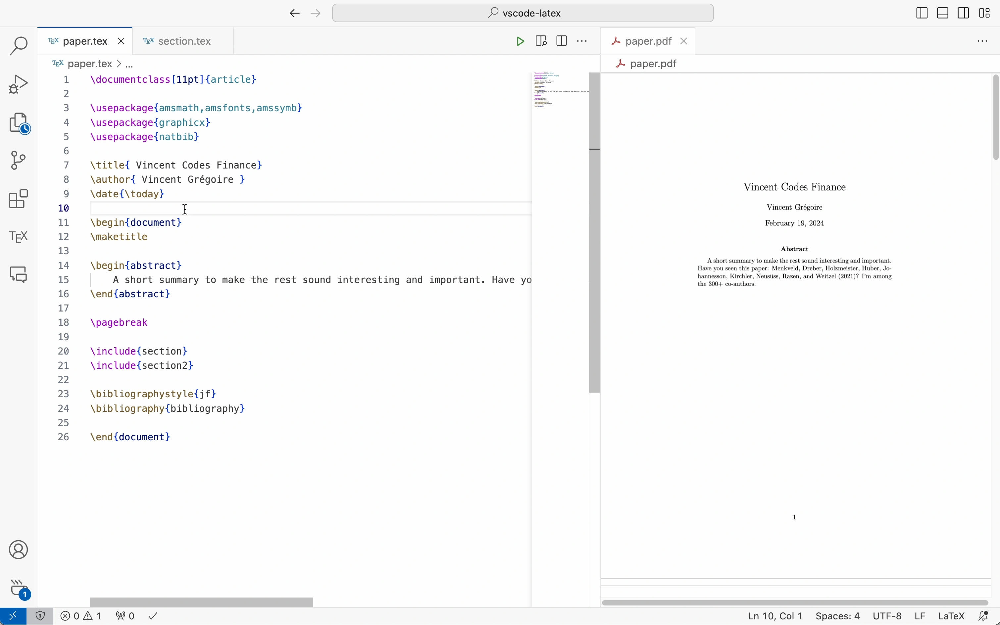
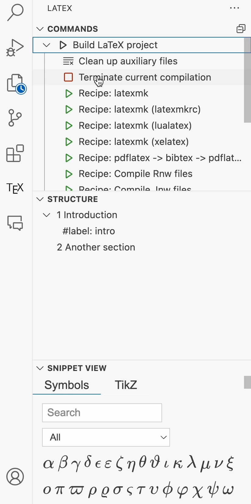
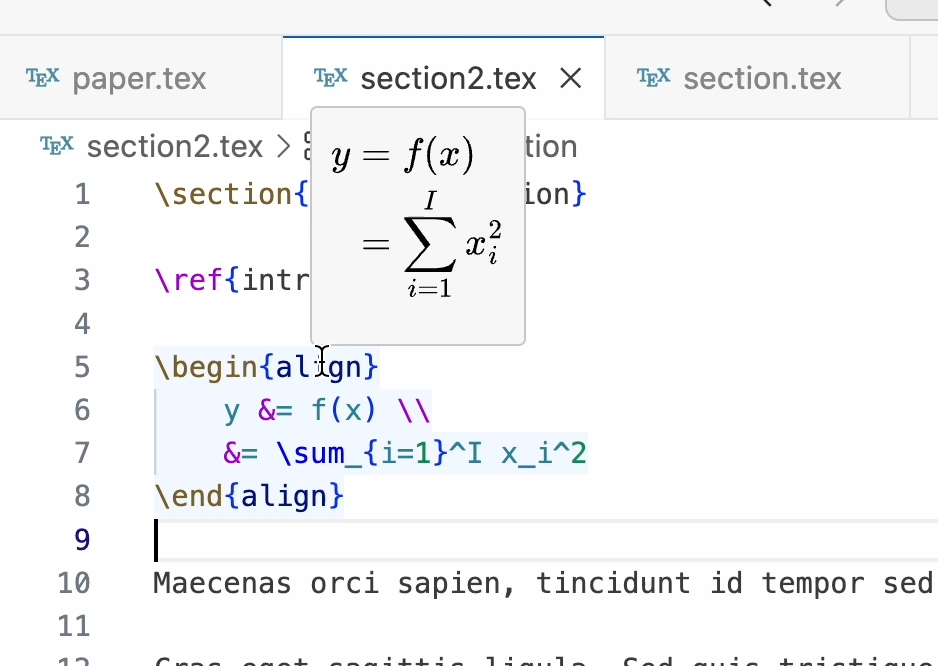
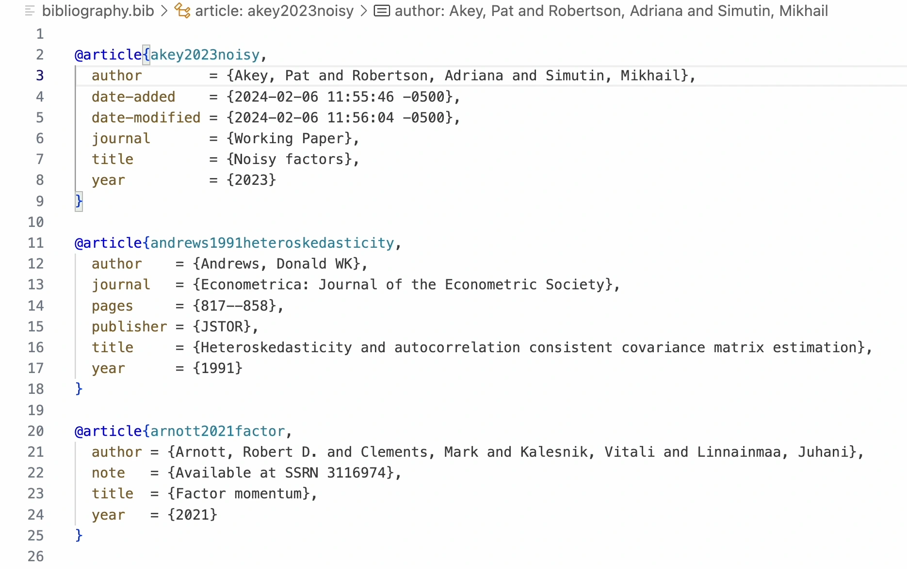
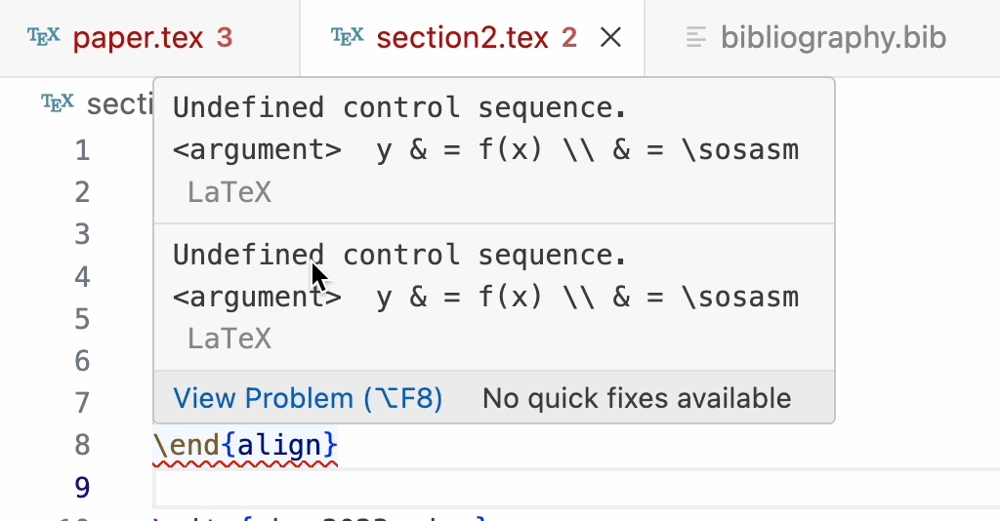
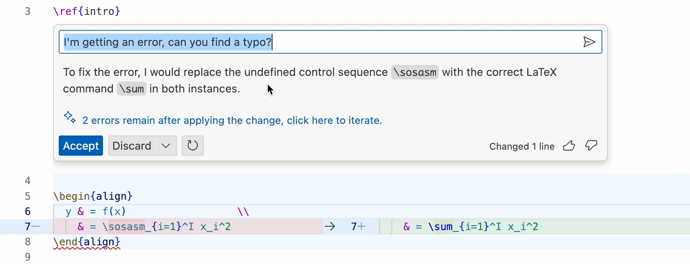

LaTeX is a powerful typesetting system that is widely used for producing scientific publications and academic papers. Visual Studio Code is a versatile and extensible code editor that has gained popularity among developers and researchers. This extensibility made it possible to create a rich ecosystem of extensions that enhance the functionality of VS Code for various tasks, including writing and managing LaTeX documents. The LaTeX Workshop extension is one such tool that transforms VS Code into a feature-rich LaTeX editor, providing seamless compilation, real-time preview, and intelligent autocomplete, among other capabilities.
In this post, I will guide you through the process of setting up VS Code for LaTeX writing, including installing the necessary extensions, configuring the environment, and exploring additional tools to enhance your productivity. By the end of this guide, you will have a well-optimized LaTeX writing environment in VS Code, equipped with the tools and features to streamline your research and writing tasks.

Video tutorial
This post is also available as a video tutorial on YouTube.
What is \(\LaTeX\) and how to install it
LaTeX is more than just a typesetting system; it’s a powerful tool that has become indispensable for many people involved in academic writing. Its capability to handle complex mathematical formulas, precise formatting, and automatic generation of bibliographies and indexes makes it the go-to choice for producing scientific documents of high typographical quality. Unlike word processors that focus on the appearance of the document on the screen, LaTeX emphasizes structure and content, allowing writers to focus on their work without worrying about formatting details.
In this post, I assume that you have a basic understanding of LaTeX and its syntax. If you’re new to LaTeX, I recommend exploring an introductory guide to familiarize yourself with its fundamental concepts and syntax. You can also explore online LaTeX editors like Overleaf to experiment with LaTeX without installing it on your local machine. Overleaf also provides a tutorial on learning LaTeX in 30 minutes.
I also assume that you have a LaTeX distribution installed on your system. Here are the most popular LaTeX distributions for different operating systems:
The most popular LaTeX distribution for macOS is MacTeX, which includes all the major TeX-related programs and packages. You can download the MacTeX installer from the official website and follow the on-screen instructions to install it on your system.
If you’re like me and prefer to use homebrew to install software on your Mac, you can install MacTeX using the following command:
brew install --cask mactexHomebrew also provides a cask named mactex-no-gui that installs MacTeX without the extra graphical user interface applications and a cask named basictex that installs a minimal TeX Live distribution.
For Windows users, MiKTeX is a popular choice for installing LaTeX. MiKTeX is known for its user-friendly installation process and on-the-fly package installation feature. You can download the MiKTeX installer from the official website and follow the on-screen instructions to install it on your system.
For Linux users, TeX Live is a comprehensive TeX system that can be used on various Unix-based systems, including Linux. You can install TeX Live using your distribution’s package manager. For example, on Ubuntu, you can install TeX Live using the following command:
Why VS Code?
There are plenty of LaTeX editors available,1 so why choose Visual Studio Code for writing LaTeX documents?
VS Code is not just any code editor; it’s a feature-rich, extensible, and highly customizable environment that supports a wide array of programming languages and tools, making it an ideal choice for developers and researchers alike. At its core, LaTeX is a programming language for typesetting documents, so it makes sense to use a powerful code editor like VS Code to write and manage LaTeX documents. Here are the main reasons why I decided to use VS Code for LaTeX writing:
- Unified Workspace: VS Code provides a single environment for both coding and writing, eliminating the need to switch between different applications for different aspects of your project.
- Extension Ecosystem: The vast library of extensions available in VS Code can augment and tailor the editor to your specific needs, enhancing productivity and simplifying your writing workflow. This includes spell checkers, grammar checkers, and even AI-powered tools.
- Built-in Source Control: With Git integration out of the box, managing versions of your LaTeX documents becomes seamless, facilitating collaboration and historical tracking of your work.
- Customization: VS Code’s extensive customization options allow you to create a writing environment that suits your preferences, from visual themes to keyboard shortcuts and snippets. And if you require them, VS Code includes many accessibility features, such as screen reader support and high contrast themes, making it an inclusive environment for users with diverse needs.
Getting Started with LaTeX Workshop for VS Code
The LaTeX Workshop extension transforms VS Code into a powerful LaTeX editor, offering a comprehensive set of features tailored specifically for LaTeX users:
- Seamless Compilation: Automatically compile your LaTeX documents within VS Code, with customizable recipes to handle various compilation flows.
- Real-time Preview: View your compiled PDF documents directly in VS Code, providing immediate feedback on how your document looks.
- Intelligent Autocomplete: Get smart suggestions for LaTeX commands as you type, speeding up your writing process.
- Error Logging and Navigation: Quickly identify and navigate to errors in your LaTeX source, simplifying the debugging process.
- Customizable Build and Clean-Up: Configure build options and clean-up routines to match your project’s requirements, keeping your workspace organized.
To begin using LaTeX Workshop in VS Code, I recommend creating a new profile in VS Code for your LaTeX projects, which will allow you to customize the editor settings specifically for LaTeX writing. Then you can install the LaTeX Workshop extension and configure it to suit your workflow. In my case, I have not touched the default settings of LaTeX Workshop because I found them to be quite good for my needs. I also use the following extensions to enhance my LaTeX writing experience:
- Grammarly: The Grammarly extension brings the advanced grammar, spelling, and style checking capabilities of Grammarly to VS Code. I found it to be quite useful for working with LaTeX documents. There is a premium plan to get more advanced features, but the free version is already quite good.
- GitHub Copilot ($): GitHub’s ChatGPT-powered code completion tool that can provide suggestions for LaTeX commands and environments. It also works well with text in LaTeX documents, offering suggestions based on the context.
If you decide to use Grammarly and Copilot, I recommend configuring them to work with LaTeX documents. For Grammarly, you can enable it for LaTeX files by adding the following to your settings.json file:2
"grammarly.files.include": [
"**/*.tex",
],
"github.copilot.enable": {
"latex": true,
}Some other extensions that you might find useful include:
- Spell Right: A lightweight, offline spell checker that supports multiple languages and can be used within LaTeX documents in VS Code. It uses the OS spellchecker on macOS and Windows.
- Antidote ($): Antidote is a comprehensive writing assistance tool offering corrections for spelling, grammar, and typography, along with rich dictionaries and language guides for French and English. The Antidote extension integrates these features into VS Code, making it accessible for LaTeX projects. Note that Antidote is aware of the LaTeX syntax.
- LTeX ($): LaTeX-aware extension for access to LanguageTool from within VS Code. LanguageTool is a style and grammar checker that can be used to improve your writing style and grammar.
In the following sections, I will guide you on using LaTeX Workshop and the other extensions to use your LaTeX writing environment in VS Code, making the most of the tools and features to streamline your research and writing tasks.
Compiling LaTeX Documents in VS Code
By default, LaTeX Workshop will automatically compile your LaTeX documents when you save them. This means that you can focus on writing your document and let LaTeX Workshop take care of the compilation process in the background. The extension provides a real-time preview of your compiled PDF document, allowing you to see the changes you make to your LaTeX source code immediately. You can change this behavior and the recipe used to compile your document by modifying the settings of LaTeX Workshop.
Additional options are available in the left sidebar of VS Code, under the \(\tex\) icon. There you can find different build commands, additional options for viewing the PDF, and view the compilation logs. You can also navigate the document structure and access the quick symbol view.

Multi-file projects
LaTeX Workshop supports multi-file projects, which are common in LaTeX documents. This means that you can split your document into multiple files and include them in a main file using the \input{} or \include{} commands. LaTeX Workshop will automatically detect the structure of your project and compile the main file, including all the subfiles, when you save it. This feature is particularly useful for organizing large documents and collaborating with others, as it allows you to work on different parts of the document independently.
By default, if the current document does contain a \documentclass[...]{...} or \begin{document} tag, LaTeX Workshop will identify the root file of your project by looking for a file with the .tex extension in the root directory of your workspace that contains such a tag. You can also specify explicitly the root file of your project by adding a comment at the beginning of your LaTeX source code: % !TEX root = relative/or/absolute/path/to/root/file.tex. See the LaTeX Workshop documentation for more details.
Syncing source and preview
LaTeX Workshop provides a feature called “SyncTeX” that allows you to synchronize the source and preview of your LaTeX document. This means that when you click on a section of your PDF, the corresponding part of your LaTeX source code is highlighted, and vice versa. This feature is particularly useful for navigating large documents and reviewing changes.
SyncTeX is enabled by default. It supports both forward and reverse search, meaning you can jump from your source to the PDF and back:
- Forward Search (source to pdf): Place the cursor where you want in the source code then type
cmd+option+jon Mac orctrl+alt+jon Windows/Linux, and the PDF viewer will jump to the corresponding location. - Reverse Search (pdf to source): Click on a location in the PDF while holding
cmdon Mac orctrlon Windows/Linux, and the source code will jump to the corresponding location.
SyncTeX also allows you to do a forward search on references. For that, just over on the reference and a View on PDF button will appear.
If you only want to see a preview of an equation or bib entry, all you have to do is place the cursor over the equation or reference to trigger a preview.

Formatting
I always found LaTeX to be a bit of a pain to format, and since I’m too lazy to do it myself, my documents often look like a mess. My life changed when I discovered the concept of a code formatter, which automatically formats your code according to a set of rules. LaTeX Workshop supports formatting using the latexindent tool, which can automatically format your LaTeX source code according to your preferred style. To enable this feature, you need to install latexindent on your system. It is a Perl script that is also available as a standalone executable for macOS, Windows, and Linux. Once you install it, make sure it is accessible from your PATH.
On macOS, you can install it using Homebrew with the following commands:
brew install perl
brew install cpanm
cpanm YAML::Tiny
cpanm File::HomeDirI recommend configuring VS Code to automatically format your LaTeX documents whenever saving a file. To do this, open your settings, search for Format On Save, and enable it. This will ensure that your LaTeX documents are automatically formatted according to your preferred style whenever you save them.
Formatting your LaTeX documents is especially important when using version control. By having a consistent style, you can avoid unnecessary merge conflicts and make it easier to review changes in your documents.
Working with Bibliographies in LaTeX and VS Code
BibTeX is a widely used bibliography management tool for LaTeX documents. It allows you to create a bibliography database (.bib file) containing references and citations, which can be cited in your LaTeX documents using the \cite{} command. BibTeX is a powerful tool for managing references, but it requires careful management of the .bib file and can be cumbersome to maintain manually.
BibTex is supported out of the box by LaTeX Workshop, and it can be used to compile your bibliography and generate a list of references in your document. It will automatically detect your bibliography from the root file of your project and use it to suggest references as you type \cite{} commands in your LaTeX source code.

LaTex Workshop also provides a formatter for BibTeX files, which not only formats your .bib file but can also sort the entries alphabetically. To enable automatic formatting of your .bib files, including automatic sorting of entries, add the following to your settings.json file:3
"latex-workshop.bibtex-fields.sort.enabled": true,
"latex-workshop.bibtex-format.sort.enabled": true,
"[bibtex]": {
"editor.defaultFormatter": "James-Yu.latex-workshop"
}If you use the Zotero reference manager, you can use the Zotero LaTex extension to integrate Zotero with VS Code. This extension allows you to search and insert references from your Zotero library directly into your LaTeX documents, streamlining the citation process.
Customizing the Writing Environment in VS Code for LaTeX
Crafting a comfortable and efficient writing environment is crucial for academic writers, especially when working on complex LaTeX documents. Visual Studio Code (VS Code) offers a plethora of customization options to tailor the editor to your specific needs, enhancing productivity and making the writing process more enjoyable. This section explores various ways to customize your VS Code environment for LaTeX writing, from visual tweaks to functional enhancements.
Tips when using VS Code for LaTeX Writing
Use code snippets: LaTeX Workshop provides built-in snippets for common LaTeX commands and environments. For example, typing
BEQand pressingTabwill expand to\begin{equation} ... \end{equation}. See the full list of snippets in the LaTeX Workshop documentation or create your own custom snippets to speed up your writing process.Customize the build process: As discussed in previous sections, customizing the build process for your LaTeX projects can streamline your workflow. Use tasks in VS Code to define custom build commands, specifying your preferred LaTeX distribution and any additional steps required for your document, such as glossary or index processing.
Minimize Distractions: Utilize Zen Mode (
View: Toggle Zen Mode) to focus on your writing by hiding the VS Code interface, leaving only the text editor visible.
Debugging LaTeX Documents in VS Code
Writing in LaTeX can sometimes feel like a smooth sail—until you encounter an error that halts your compilation or messes up your document formatting. Debugging LaTeX documents can be a frustrating task, especially when dealing with complex structures and multiple files. However, Visual Studio Code (VS Code), coupled with the LaTeX Workshop extension, provides simple yet powerful tools and features to simplify the debugging process. Here are the places you can look for information when debugging LaTeX documents in VS Code:
- Error Messages: LaTeX error messages often include the line number and a description of the issue, which can be cryptic at first glance. The first step in debugging is to carefully read these messages and identify the problematic code snippet. Fortunately, VS Code’s LaTeX Workshop extension highlights errors directly in the editor, making it easier to locate and address them.

Log Files: When LaTeX compiles a document, it generates a log file (.log) that contains detailed information about the compilation process, including warnings and errors. Reviewing the log file can provide insights into what went wrong and why. You can access the log file through the LaTeX Workshop extension’s “View LaTeX Workshop log” command, or by looking at the output of the LaTeX compiler in the output panel.
Version Control: If you use Git to track changes in your work you can use the version control features of VS Code to review the history of your document and identify when an error was introduced. This can be especially helpful in pinpointing the source of an error and reverting to earlier versions of your document if necessary.
GitHub Copilot: GitHub Copilot can provide suggestions for LaTeX commands and environments, which can be helpful when you’re unsure about the correct syntax or usage of a particular command. You can ask Copilot for help fixing an error by typing a description of the problem. It will then provide suggestions based on the context of your document.

Conclusion and Further Resources
In this guide, we’ve covered the basics of setting up and optimizing Visual Studio Code (VS Code) for LaTeX projects. We’ve discussed installation, configuration, debugging, and version control best practices. Additionally, we’ve highlighted some useful extensions that can improve your writing workflow in VS Code.
I strongly recommend that you use a version control system for your LaTeX projects. This will allow you to track changes, collaborate with others, and maintain a history of your work. If you are new to version control, I recommend reading my post on Using GitHub for academic research.
If you want to further customize your LaTeX writing environment, you can! Have a look at the LaTeX Workshop extension documentation to see all the features it offers.
Footnotes
I used TeXstudio for over a decade before switching to VS Code, and before that I used Texmaker, TeXnicCenter, and TeXShop for many years each.↩︎
You can access your
settings.jsonfile by opening the Command Palette (Cmd+Shift+Pon Mac,Ctrl+Shift+Pon Windows/Linux) and searching forPreferences: Open User Settings (JSON).↩︎You can access your
settings.jsonfile by opening the Command Palette (Cmd+Shift+Pon Mac,Ctrl+Shift+Pon Windows/Linux) and searching forPreferences: Open User Settings (JSON).↩︎